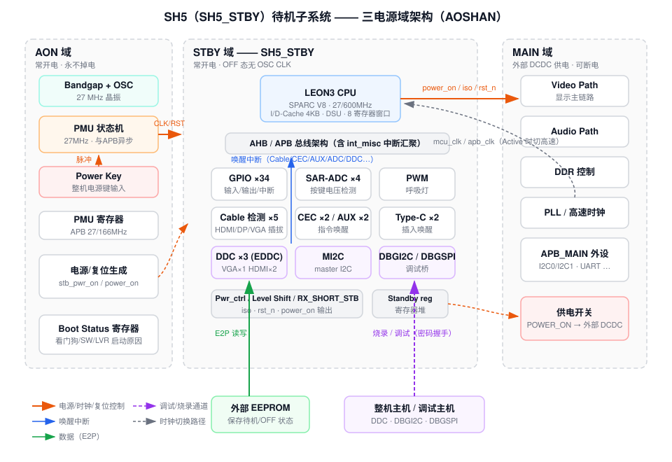
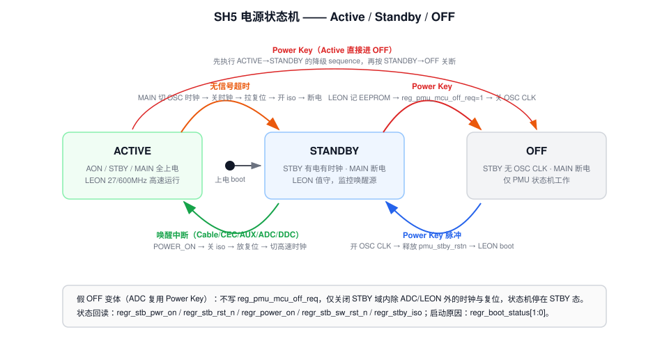
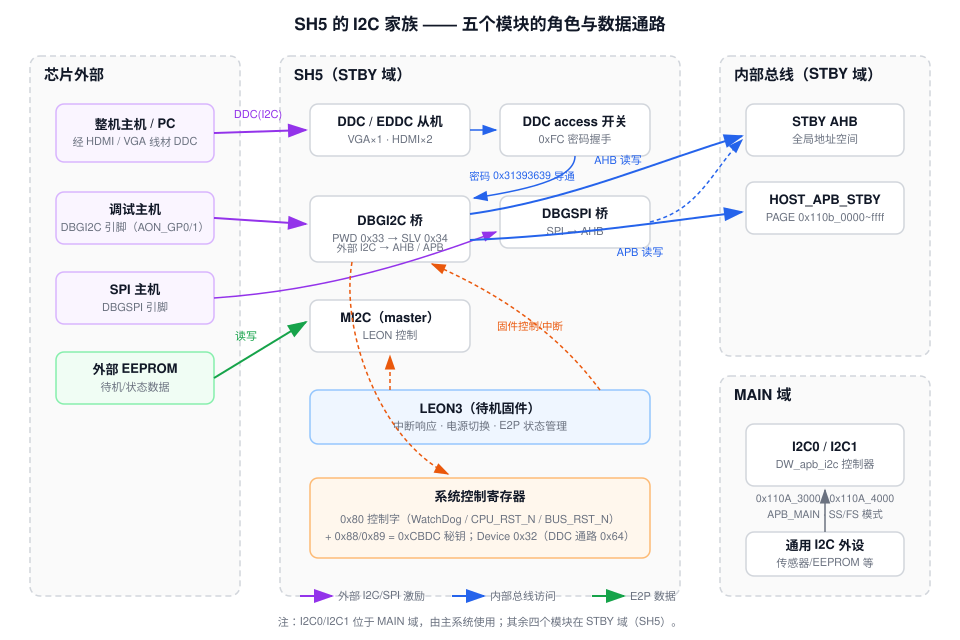
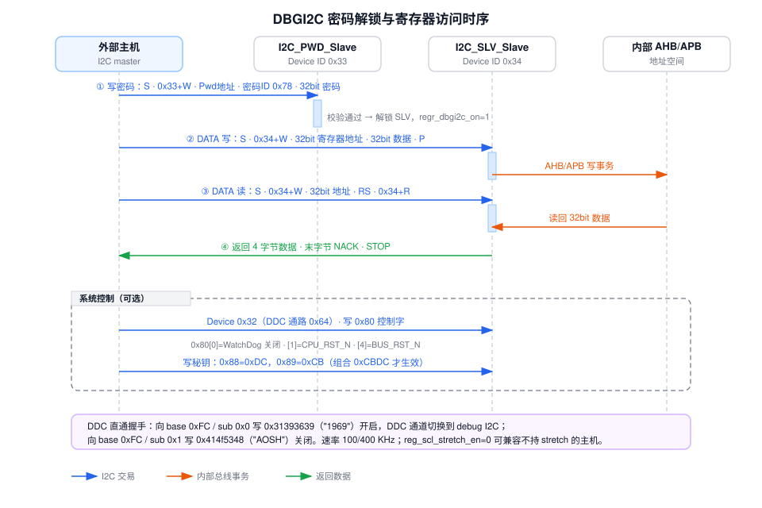

SH5 待机子系统（SH5_STBY）与 I2C 模块技术报告
基于 AOSHAN / AOSHAN2 / HK6T62 三个项目的 sh5 文档集整理 · 2026-08-14 · 全文中文，寄存器/信号名保留英文
1概述：SH5 是什么
SH5 是芯片 Standby（待机）域子系统的模块名，源文档中的正式写法为 SH5_STBY：
它不是单个 IP，而是一个完整的常开电微控制器子系统，包含：
- LEON3 CPU（SPARC V8 架构 32 位处理器）及 AHB/APB 总线架构；
- PMU 状态机与电源/复位/时钟控制寄存器；
- 待机域外设：GPIO、SAR-ADC、PWM、MI2C、DDC（HDMI/VGA）、AUX/CEC/Cable 唤醒检测等；
- 调试/烧录通道：DBGI2C、DBGSPI、DDC access system bus。
三个项目的归档目录（aoshan_sh5 / aoshan2_sh5 / HK6T62_sh5）即该子系统的文档包：CPU\ 为 LEON 相关文档，Peripheral\ 为外设与调试接口文档。命名在各代有演化：AOSHAN 称 SH5_STBY，AOSHAN2 / HK6T62 的寄存器前缀已变为 Sh6_top_reg__*，归档沿用了 sh5 称呼。HK6T62 的 Standby QRG 与 AOSHAN2 内容完全一致（直接复用）。
2SH5 的作用
整颗芯片划分为 AON / STBY / MAIN 三个工作区域。SH5 位于 STBY 域，核心职责是在 MAIN 域断电或复位时仍然保持工作，充当整机的“值班管家”：
- 低功耗管理：配合 AON 域的 PMU 状态机，控制 STBY 域 OSC CLK/RST 与 MAIN 域的供电/复位/隔离，在 Active / Standby / OFF 三种状态间切换。
- 唤醒源监控：主域断电期间监控全部唤醒事件 —— HDMI/DP/VGA 插拔、HDMI CEC、DP AUX 指令、Type-C、按键（SAR-ADC 电压检测）、DDC 主机访问等，事件经中断送 LEON，由 LEON 决定给 MAIN 域上电。
- 待机期业务：LEON 运行待机固件，经 MI2C 读写外部 EEPROM 保存/恢复状态，PWM 控制呼吸灯，GPIO 做整机 IO。
- 烧录与调试通道：整机厂/产线可通过 HDMI/VGA 的 DDC（I2C）或独立 DBGI2C/DBGSPI 引脚，经密码握手直接访问芯片内部总线地址空间，实现 CODE 升级与线上调试（含 CPU/总线/看门狗复位）。
3工作机制
3.1 电源域与三种工作状态
| 状态 | AON 域 | STBY 域（SH5） | MAIN 域 | 说明 |
|---|---|---|---|---|
| Active | 有电 | 有电、有时钟 | 有电 | 整机正常工作 |
| STBY | 有电 | 有电、有时钟 | 断电/复位 | SH5 值守，监控唤醒源 |
| OFF | 有电 | 有电但无 OSC CLK | 断电 | 仅 PMU 状态机工作，等 Power Key |
- AOSHAN：AON 与 STBY 同一电源域、永不掉电；MAIN 域由外部 DCDC 独立供电（
Power_On控制），跨域有 isolation（reg_stby_iso）。 - AOSHAN2 / HK6T62：整芯片同一电源域、永不掉电，低功耗靠关时钟/拉复位实现；仍保留 iso 时序“以防总线挂死”；Level Shift 为数字直连占位模块。

3.2 子系统组成
| 模块 | 功能 |
|---|---|
| PMU State Machine | AON 域，27 MHz（AOSHAN2 为 27/13.5 MHz），与 APB 时钟异步；控制 STBY 域 OSC CLK/RST 与进出 OFF mode |
| LEON（SH5 核心） | 27/600 MHz（AOSHAN2 为 27/350 MHz）；控制 MAIN 域上电/复位，运行待机固件 |
| GPIO control | STBY 域 GPIO 输入/输出/中断（AOSHAN 33~34 个，AOSHAN2 36 个） |
| SAR-ADC | 4 通道，检测 Key Board 模拟电压，越窗产生唤醒中断 |
| AUX command detect | 解析 AUX 差分输入指令，收到唤醒指令产生中断（AOSHAN：2 个 AUX PHY） |
| CABLE 检测 | HDMI/DP/VGA 插拔中断（AOSHAN：5 个 CABLE 模块、2 HDMI + 2 DP + 1 VGA；AOSHAN2：3 个 CABLE、2 HDMI + 1 VGA） |
| HDMI CEC ×2 / TYPEC ×2 | CEC / Type-C 事件中断（AOSHAN） |
| INT_VGA_GEN | VGA 插线后有/无信号检测中断 |
| VGA DDC ×1 / HDMI DDC ×2 | EDDC 从机，主机访问产生唤醒中断，兼作 CODE 烧录口 |
| Pwr_ctrl | 产生 MAIN 域控制信号：iso（reg_stby_iso）、复位（reg_stb_sw_rst_n）、上电（reg_power_on） |
| PWM | 呼吸灯控制，输出到 PAD_PWR_STATE_IO |
| MI2C | 待机域 master I2C，LEON 控制，访问外部 EEPROM |
| RX_SHORT_STB / Level Shift | 数字信号经 1.8V↔0.9V 电压转换送 RX PHY（AOSHAN2 中 Level Shift 为直连占位） |
| DBGSPI / DBGI2C | 调试桥：外部 SPI/I2C → AHB/APB，访问芯片内部地址空间 |
3.3 LEON3 处理器
- LEON3：符合 IEEE-1754（SPARC V8）的 32 位核心；LEON-core、DSU、IRQ 控制器取自 GRLIB 1307（2014.4.16），详见
leon_grip_v4144.pdf。 - 关键配置（
LEON_Feature.xlsx，AOSHAN）：8 个寄存器窗口（兼容 Bare-C/RTEMS 编译器）、无 FPU / 无协处理器、支持 SPARC V8 硬件乘除、2 个 watchpoint、2 KB trace buffer、支持调试口/中断口、SRMMU（8 I-TLB + 2 D-TLB，文档注明可裁剪）、3 端口 2 KB register file。 - Cache：I-Cache 4 KB / 1 set / 32 B 行（每字一个 valid bit，streaming refill）；D-Cache 4 KB / 1 set / 16 B 行（write-through + 双字写缓冲，支持 AHB bus-snooping 保持一致性）。
- DSU 在线调试：DSU AHB slave 接口允许任意 AHB master 访问 CPU 寄存器与指令 trace buffer；进入 debug mode 的途径含断点指令、watchpoint、外部 break（
reg_dsu_break_n）、DSU 控制寄存器 BN bit 等；debug mode 下流水线冻结、PC/nPC 保存、DSUACT 拉高、timer 可选冻结。 - 中断：SPARC V8 模型共 15 路异步中断；各 IP 中断先送
int_misc（触发方式/屏蔽/使能/bypass），再送 LEON IRQ controller。 - 启动：默认
reg_leon_rstaddr = 0x1fc00_0000，reg_dsu_enable=1、reg_dsu_break_n=0、reg_qspi_xip_en=1（QSPI XIP 模式）、小端；上电释放 PAD_RSTN_IO 后从 QSPI Flash 启动。 - 时钟/复位：工作在
cpu_clk_stby；配置寄存器reg_mcu_clk_en / reg_mcu_clk_sel / reg_mcu_clk_div_num / reg_src_clk_en / reg_cpu_src_sel。
3.4 PMU 状态机与 Power Key
- OFF mode 下给 Power_Key 一个脉冲 → PMU 状态机打开 STBY 域 OSC CLK/RST → LEON boot，芯片退出 OFF。
- STBY / Active mode 下 Power_Key 脉冲（或软件触发）→ PMU 状态机产生中断给 LEON → LEON 做断电准备（把当前状态写入 EEPROM）→ 写
reg_pmu_mcu_off_req=1→ 状态机关闭 STBY 域时钟/复位，进入 OFF。 - 状态标志回读：STBY 侧
regr_stb_pwr_on（AOSHAN2 叫regr_stb_clk_on）、regr_stb_rst_n；MAIN 侧regr_power_on、regr_stb_sw_rst_n、regr_stby_iso。
3.5 时钟与复位（AOSHAN）
| 域 | 信号 | 来源 / 用途 |
|---|---|---|
| AON | osc_clk 27 MHz | 晶振，PMU 状态机 |
| AON | apb_clk 27 MHz / 166 MHz PLL | PMU 寄存器 |
| AON | pmu_sw_rst_n | PMU 状态机复位 |
| STBY | osc_clk 27 MHz | 低速外设 |
| STBY | mcu_clk 27 MHz / 600 MHz PLL | LEON |
| STBY | stb_rst_n | STBY 域系统复位 |
3.6 唤醒链路
唤醒源（Cable / CEC / AUX / Type-C / ADC 按键 / DDC）→ 各模块产生中断 → int_misc → LEON IRQ → LEON 执行上电序列（reg_power_on → reg_stby_iso=0 → reg_stb_sw_rst_n=1 → 时钟切换）→ MAIN 域启动。另有 irq_main / irq_stby 双向中断线连接主域与待机域。
4使用方法
4.1 上电启动流程（Power on flow）
- Bandgap 上电，OSC 27 MHz 初始化（模拟电路自举）。
- （状态机控制）打开 STBY 域 OSC CLK，释放
pmu_stby_rstn，进入 standby mode。 - （LEON 接管）LEON 从 SPI Flash boot，把 code 搬到 RAM 执行。
- LEON 读
Aon_reg__reg_first_start_flag：为 1 表示第一次启动（读 EEPROM 恢复状态，随后软件清 0；不掉电则一直保持 0）。 - LEON 读 EEPROM 中保存的状态，决定跳转方向（OFF / Normal）。
- 若为 LVR（低电压复位）启动 → 发起系统软件复位；若为 SW_RST 启动 → 软件流程正常执行。（针对鳌山上电 CPU 挂死现象的对策。）
4.2 电源模式切换（寄存器级 sequence）

- wake up 中断送 LEON（或上电时查询到 Normal 状态）。
POWER_ON拉高，外部 DCDC 给 MAIN 域供电。reg_stby_iso配 0 —— 关 isolation。reg_stb_sw_rst_n配 1 —— 释放 MAIN 复位。Sh6_top_reg__reg_src_clk_en先 1、Standby_mcu_reg__reg_src_clk_en再 1 —— 开 MAIN 时钟。reg_apb_clk_sel / reg_qspi_clk_sel / reg_mcu_clk_sel配 0 —— STBY 侧时钟切到 MAIN 域高速时钟。Sh6_top_reg__reg_apb/axi/cpu_clk_sel配 0 —— MAIN 切高速时钟。
- 检测到无信号超时。
Sh6_top_reg__reg_cpu/axi/apb_clk_sel配 1 —— MAIN 切回 osc clk。reg_mcu_clk_sel先 1、reg_qspi_clk_sel、reg_apb_clk_sel配 1 —— STBY 侧切回 osc clk。Standby_mcu_reg__reg_src_clk_en先 0、Sh6_top_reg__reg_src_clk_en再 0 —— 关 MAIN 时钟。reg_stb_sw_rst_n配 0 →reg_stby_iso配 1 →POWER_ON拉低断电。
- Power Key 响应；状态机中断通知 LEON。
- LEON 把当前状态写入 EEPROM。
- （Normal→OFF 先执行 Normal→Standby 的时钟/复位/iso/断电步骤。）
- LEON 写
Aon_reg__reg_pmu_mcu_off_req=1。 - 状态机拉低
pmu_stby_rstn、关 STBY 域 OSC CLK → OFF。
- Power Key → 状态机开 OSC CLK、释放
pmu_stby_rstn。 - LEON boot（同 4.1）。
- 走 Standby→Normal 上电 sequence。
reg_pmu_mcu_off_req，而是把 STBY 域内除 ADC 和 LEON 之外的 clk/rst 全部关闭，进入“假 OFF”（状态机仍停在 STBY 态）；OFF→STBY 时再打开。唤醒中断后需确认中断来自 PWR KEY 所在 ADC 通道且电压在合法窗口内，才视为有效 Power Key。4.3 Boot Status Register（启动原因追溯）
- MCU 读 AON 域
regr_boot_status[1:0]：00=初始值；01=看门狗触发；10=软件复位触发；11=PAD/LVR 触发。 - 读完必须 toggle
reg_boot_status_clr（0→1→0）清回00，以便记录下一次启动事件。
4.4 外设使用要点
- 配阈值
reg_adc0~3_l_th / reg_adc0~3_h_th。 - 配轮询窗口
reg_adc0~3_win_width（0 = 该通道不采样）、reg_adc0~3_mask_width、rb 低/高电平周期reg_adc_rb_low_cycle（6~16）/reg_adc_rb_high_cycle（24~32）。 - toggle
reg_adc_th_update（[0]~[3] 对应四通道）使阈值生效，最后reg_adc_en=1。 - 采样值落在
[l_th, h_th]即产生该通道独立唤醒中断；regr_adc_state可读当前窗口。 - 改窗口/rb 参数需先关 ADC（
reg_adc_en=0）再配；改阈值只需 toggle 对应 bit。
- 配预分频
reg_pwm_prescaler、极性reg_pwm_pol、输出使能reg_pwm_output_mode。 - 配计数顶点
reg_pwm_counter_top、模式reg_pwm_cnt_mode（up / up-down）。 - 配起止比较值与步长
reg_pwm_cmp_start_val / end_val / step_val（bit15 为符号位；比较值逐周期自动加/减、越界回初值 → 占空比自动变化形成呼吸效果）。 - 配输出周期数
reg_pwm_cycle_num（完毕产生中断），reg_pwm_ch_en=1启动。不工作时默认输出高电平。
GPIO：STBY 域 GPIO 支持基本输入/输出/中断，直接经 standby 寄存器控制。
4.5 Debug I2C 与封装的关系（AOSHAN）
| 封装 | BondPin | 默认直通通路 |
|---|---|---|
| 176Pin（2D1H / 2H1D） | BOND_VALUE1=0, DEBUGI2C=1 | 内部 DDC0 直通系统总线 |
| 88Pin 1H1D | BOND_VALUE1=1, VALUE0=1, DEBUGI2C=0 | 内部 DDC1 直通系统总线 |
| 88Pin 1A1H | BOND_VALUE1=1, VALUE0=0, DEBUGI2C=0 | 内部 DDC1 直通系统总线 |
HDMI_RX0 / HDMI_RX1pad 默认接内部 DDC0/DDC1 逻辑，整机可经此烧录 CODE。PAD_MI2C_SCL/SDA（SI2C）在不同封装下默认接 DDC0 或 DDC1；2H1D 场景 FW 运行后需切换为 MI2C 功能并关闭 DebugI2C。- 与 AUX share 的 pad（HDMI_RX1、AON_GP8/9）在 DP 场景下 DDC1/GPIO 功能关闭、保留 AUX。
- AOSHAN2：2H+1A 三路输入各有 DDC 通路，每路均可通过
0xFC密钥握手访问系统总线；另有AON_GP0/AON_GP1作独立 DBGI2C 接口，默认直通系统总线。
4.6 Debug 手段
- PMU / 工作状态：回读 AON reg（见 3.4）；LEON 中断状态回读
standby_mcu_reg的int_gen寄存器；Level shift 状态同样可回读。 - PIN 级 debug：
Reg_dbg_sel[3]=pwm_dbg、Reg_dbg_sel[2]=dbg_pmu；Reg_dbg_sel[3:0]=0时输出{14'h0, osc_clk_dbg, osc_div_dbg}。 - 其余 IP 的 dbg path 见各 IP 自己的 QRG。
5I2C 模块专题
SH5 资料里的“I2C”是一族用途不同的模块，先分清角色再看细节：
| 模块 | 角色 | 位置 | 用途 |
|---|---|---|---|
| I2C0 / I2C1（DW_apb_i2c） | master / slave 控制器 | APB_MAIN 总线（MAIN 域） | 通用 I2C 外设接口 |
| MI2C | master | STBY 域，LEON 控制 | 访问外部 EEPROM |
| DDC / EDDC（VGA×1、HDMI×2） | slave | STBY 域 | 显示器 DDC 通道：唤醒中断 + 烧录入口 |
| DBGI2C（AHB + APB 两 IP） | slave 桥 | STBY AHB / HOST_APB_STBY | 外部 I2C → 内部总线，调试/烧录 |
| DDC access system bus | 握手机制 | DDC ↔ DBGI2C 之间 | 密码把 DDC 通道切到系统总线 |

5.1 通用 I2C 控制器（DW_apb_i2c）MAIN 域
作用：AOSHAN 中两路标准 I2C 控制器，挂 APB_MAIN 总线（MAIN 域）：
- I2C0：
0x110A_3000 ~ 0x110A_3FFF；I2C1：0x110A_4000 ~ 0x110A_4FFF - IP 为 Synopsys DW_apb_i2c（databook v2.02a，2018-07），AMBA 2.0 APB slave。
- 项目裁剪（QRG）：standard 100 Kbps / fast 400 Kbps、master 与 slave、start/stop/repeated start/ACK、总线忙检测、clock stretch、DMA、BUS CLEAR（SCL/SDA 低电平超时检测与恢复）。
- 时钟
apb_clk_main，复位main_sw_rst_n；时钟配置reg_apb_clk_sel / reg_apb_clk_div_num / reg_src_clk_en。
工作机制：IP 内含 Master 状态机、Slave 状态机、寄存器堆、AMBA 总线接口、SCL 时钟发生器（高/低电平计数）、Tx/Rx shift、Rx 滤波、TX/RX FIFO、DMA handshaking（兼容 DW_ahb_dmac）与中断控制器。注意：只能配置为纯 master 或纯 slave，不能同时。databook 全量能力还含 HS 3.4 Mb/s、10-bit 寻址、SMBus/PMBus/ARP、Ultra-Fast mode —— 项目未用。
寄存器映射（offset 相对 I2C0/I2C1 基址）：
| Offset | 寄存器 | 说明 |
|---|---|---|
| 0x00 | IC_CON | 控制寄存器（仅 IP 禁用时可写）：master/slave 使能、速率、7/10bit、restart en |
| 0x04 | IC_TAR | 目标从机地址 |
| 0x08 | IC_SAR | 本机 slave 地址 |
| 0x0C | IC_HS_MADDR | HS 模式 master code |
| 0x10 | IC_DATA_CMD | 收发数据/命令口（写 = 填 TX FIFO / 发读命令；读 = 取 RX FIFO） |
| 0x14/0x18 | IC_SS_SCL_HCNT/LCNT | 标准速率 SCL 高/低电平计数 |
| 0x1C/0x20 | IC_FS_SCL_HCNT/LCNT | 快速速率 SCL 高/低电平计数 |
| 0x24/0x28 | IC_HS_SCL_HCNT/LCNT | HS 模式 SCL 计数 |
| 0x2C/0x30/0x34 | IC_INTR_STAT/MASK/RAW_INTR_STAT | 中断状态/屏蔽/原始状态 |
| 0x38/0x3C | IC_RX_TL / IC_TX_TL | RX/TX FIFO 阈值 |
| 0x40~0x68 | IC_CLR_* | 清各类中断（读清零） |
| 0x6C | IC_ENABLE | IP 使能 |
| 0x70 | IC_STATUS | 传输状态（只读） |
| 0x74/0x78 | IC_TXFLR / IC_RXFLR | FIFO 内数据个数 |
| 0x7C | IC_SDA_HOLD | SDA 保持时间（tHD;DAT） |
| 0x80 | IC_TX_ABRT_SOURCE | 发送中止原因（32 位） |
| 0x88/0x8C/0x90 | IC_DMA_CR / TDLR / RDLR | DMA 控制与收发水位 |
| 0x94 | IC_SDA_SETUP | SDA 建立时间 |
| 0x98 | IC_ACK_GENERAL_CALL | 是否 ACK 广播呼叫 |
| 0x9C | IC_ENABLE_STATUS | 使能状态回读 |
| 0xA0/0xA4 | IC_FS_SPKLEN / IC_HS_SPKLEN | 毛刺抑制上限（ic_clk 计） |
| 0xAC/0xB0 | IC_SCL/SDA_STUCK_AT_LOW_TIMEOUT | SCL/SDA 拉低超时门限（bus clear 用） |
| 0xB4 | IC_CLR_SCL_STUCK_DET | 清 SCL stuck 中断 |
| 0xB8 | IC_DEVICE_ID | 器件 ID |
| 0xBC~0xDC | IC_SMBUS_* | SMBus 超时/ARP/UDID（项目未用） |
| 0xF0 | REG_TIMEOUT_RST | 超时计数复位 |
| 0xF4 | IC_COMP_PARAM_1 | 配置参数回读（FIFO 深度等，只读） |
| 0xF8 / 0xFC | IC_COMP_VERSION / IC_COMP_TYPE | 组件版本 / 类型 |
使用方法（master 收发，databook 6.3 编程示例）：
- 写
IC_ENABLE=0禁用 IP（IC_CON只能在禁用时写）。 - 配
IC_CON：IC_SLAVE_DISABLE=1、IC_RESTART_EN=1、7-bit 寻址、IC_MAX_SPEED_MODE=1（standard）、IC_MASTER_MODE=1。 - 写
IC_TAR= 目标 slave 地址；配IC_SS_SCL_HCNT/LCNT（或 FS 对应寄存器）得到目标速率。 - 按需开
IC_INTR_MASK中断、配IC_RX_TL/IC_TX_TL；用 DMA 则配IC_DMA_CR/TDLR/RDLR。 - 写
IC_ENABLE=1使能。 - 发送：向
IC_DATA_CMD连续写数据字节（bit8=0）；接收：写读命令（bit8=1），再读IC_DATA_CMD取回数据。 - 中断中处理
TX_ABRT（读IC_TX_ABRT_SOURCE查因、IC_CLR_TX_ABRT清除）、RX_FULL、STOP_DET等。 - Slave 用法：
IC_CON配 slave 使能 + master 关闭，写IC_SAR，使能后响应RX_FULL（收数）与RD_REQ（发数）中断。 - Bus clear / 恢复：
IC_SCL/SDA_STUCK_AT_LOW_TIMEOUT设 stuck 门限，超时产生 stuck 中断，按 databook 6.4 流程恢复（禁能 IP → 恢复总线 → 清IC_CLR_SCL_STUCK_DET）。
5.2 MI2C（待机域 master I2C）STBY 域
- 作用：由 LEON 控制的 master I2C，访问外部 EEPROM（电源切换流程中“LEON 在 EEPROM 记录状态”即通过它）。
- 引脚与封装强相关：
PAD_MI2C_SCL/SDA在部分封装下默认是 DDC 通路功能，FW 运行后需切换为 MI2C 并关闭 DebugI2C（见 4.5）。
5.3 DDC / EDDC（VGA / HDMI 从机）STBY 域
- 每路视频输入各一条 DDC（I2C 从机）通道：VGA×1 + HDMI×2。
- 两个作用：①主机访问时产生唤醒中断给 LEON；②作为整机烧录/调试入口 —— 经密钥握手把 DDC 通道切到 debug I2C 访问系统总线（见 5.5）。
5.4 DBGI2C（调试 I2C 桥）调试通道
作用：把外部 I2C 交易转换成 AHB/APB 总线访问，让外部主机直接读写芯片内部地址空间，用于产线烧录与调试。AOSHAN2 中分两个 IP：
- AHBDBGI2C：位于 STBY 域 AHB 总线，可访问全局地址空间；Device ID、Password 均可配。
- APBDBGI2C：位于 HOST_APB_STBY 总线，可访问 PAGE 寄存器
0x110b_0000~0x110b_ffff。
工作机制（密码解锁）：IP 内含两个 I2C slave —— I2C_PWD_Slave（默认 Device ID 0x33）校验密码；密码正确后 I2C_SLV_Slave（默认 0x34）解锁，可访问 AHB 总线，regr_dbgi2c_on=1 表示已解锁。配置寄存器：reg_dbgi2c_pwdid、reg_dbgi2c_pwd_in（32bit 密码）、reg_dbgi2c_pwd_dis、reg_dbgi2c_slvid、reg_dbgi2c_cfgid（默认 0x32，读写 I2C 内部寄存器）、reg_host_scl_filter、reg_host_sda_filter。

协议时序：
- Password 写：
S + DeviceID(7bit)+W + Password Address(8bit) + Password ID(8'h78) + 密码字节…；读密码用 Repeat Start 切读。 - DATA 写：
S + DeviceID+W + Register Address(32bit，4 字节) + Data(32bit，4 字节) + P。 - DATA 读：
S + DeviceID+W + 32bit 地址 + RS + DeviceID+R + 32bit 数据 + NACK + P。 reg_scl_stretch_en置 0 后 slave 不再拉 SCL，可兼容不支持 stretch 的 master；读数正确性取决于 slave 取数速度（需在“发完 address 到发完 device id”之间取回，可延后 repeat start 调整）。速率 100/400 KHz。
系统控制（CPU / BUS / WatchDog 复位）：DBGI2C→APB 访问开启后访问 Device ID 7'h32（DDC 通路为 8'h64）：写 0x80（[0]=WatchDog 关闭、[1]=CPU_RST_N、[4]=BUS_RST_N）；写 0x88/0x89 秘钥 0xDC/0xCB，组合 0xCBDC 才许可 0x80 控制字生效。
5.5 DDC 直通系统总线（DDC access system bus）
作用：上位机经显示器线材的 DDC（I2C）通道直接访问芯片内部寄存器，实现 CODE 升级。
- 开启：DDC I2C 访问 base
0xFC（可配）、sub0x0，写开启密码0x31393639（ASCII "1969"）→ DDC 的 I2C 访问切到 debug I2C。 - 关闭：base
0xFC、sub0x1，写关闭密码0x414f5348（ASCII "AOSH"）。 - 配套寄存器：
reg_slv_en_ddc_acc_sys（使能，默认 1）、reg_slv_addr_ddc_acc_sys（base，默认 0xFC）、reg_ddc_acc_sys_on/off_sub_addr（默认 0/1）、regr_sel_slv_ddc_acc_sys_sw（RO，外部正在经 DDC 访问的标志）、reg_ddc_i2c_slv_ddc_acc_sys_sw_write_en / sw_read_en（read_en 不建议开）。 - 开启后访问 Device ID
8'h64即做 CPU/BUS/WatchDog 控制（布局同 5.4：0x80 控制 + 0xCBDC 秘钥）。
5.6 附：DBGSPI（对照参考）
与 DBGI2C 同族的 SPI 调试桥（外部 SPI → AHB，STBY 域）：支持 burst/word/byte 读写、SPI mode 0、可配 32-bit 密码。命令字：0x1 Burst Write、0x2 Burst Read、0x3 Word Write、0x4 Word Read、0x5 Byte Write、0x6 Byte Read、0x7 Password Write、0x8 Password Read、0x9 Read Status（spi_err / read_busy / write_busy）。详见 STD_DBGSPI_Application_Note.vsdx。
6三项目差异速查
| 项 | AOSHAN | AOSHAN2 | HK6T62 |
|---|---|---|---|
| 子系统命名 | SH5_STBY | 寄存器前缀 Sh6_* | 同 AOSHAN2（QRG 完全复用） |
| 电源域 | AON+STBY 同域、MAIN 独立 DCDC | 整芯片同一电源域，靠关时钟/复位省电 | 同 AOSHAN2 |
| PMU 频率 | 27 MHz | 27 / 13.5 MHz | 同 AOSHAN2 |
| LEON 频率 | 27 / 600 MHz | 27 / 350 MHz | 同 AOSHAN2 |
| GPIO 数 | 33~34（文档两处不一致） | 36 | 同 AOSHAN2 |
| 唤醒源 | 2 AUX PHY、5 CABLE、2 HDMI、2 DP、1 VGA、2 CEC、2 TYPEC、4ch SARADC | 3 CABLE、2 HDMI、1 VGA、4ch SARADC | 同 AOSHAN2 |
| Level Shift | 真实 1.8V↔0.9V | 数字直连占位 | — |
| 通用 I2C | I2C0/1 @ 0x110A_3000 / 0x110A_4000（APB_MAIN） | 资料侧重 DBGI2C | 同左 |
| 调试通道 | DBGSPI + DDC0/1 直通 | DBGI2C（AHB+APB）+ DDC 0xFC 握手 + 独立 DBGI2C 引脚 | DBGI2C/DBGSPI app note 同 AOSHAN2 |
7资料来源与边界
- 主要来源（
E:\_archive\projects-old\下三套 sh5 文档集）：AOSHAN_QRG_APP_Standby.doc(.vsdx)、AOSHAN2_QRG_APP_Standby.doc（= HK6T62 同名文档）、*_IP_QRG_LEON.doc、LEON_Feature.xlsx、AOSHAN_IP_QRG_I2C.doc、AOSHAN2_IP_QRG_DBGI2C.doc、AOSHAN2_IP_QRG_ddc_access_system_bus.doc、AOSHAN_IP_QRG_DBGSPI.doc、STD-DBGI2C_APPlication_Note.vsdx、STD_DBGSPI_Application_Note.vsdx、DW_apb_i2c_databook.pdf（v2.02a，2018-07，338 页）。 - 原始文件为企业透明加密，内容经 Office COM（.doc/.xlsx）、Visio COM（.vsdx）、pypdf（.pdf）提取整理。
- 边界说明：①原 .doc 中部分内嵌图片无法文字提取，已用同名 .vsdx 的图内文字补全（PMU 框图、mode switch sequence、DBGI2C/DBGSPI 时序）；②AOSHAN 文档 GPIO 数量两处不一致（34 vs 33），按原文如实标注；③LEON 深度细节见
leon_grip_v4144.pdf（cache 70.3/70.10/70.11.4，DSU 寄存器 25.6），启动细节见各项目 Boot_Sequence 与 interrupt_src 表格（不在归档内）。 - 配套 Markdown 版：
E:\docs\sh5_subsystem_guide.md；本报告图源生成器：tools\gen_svgs.py。